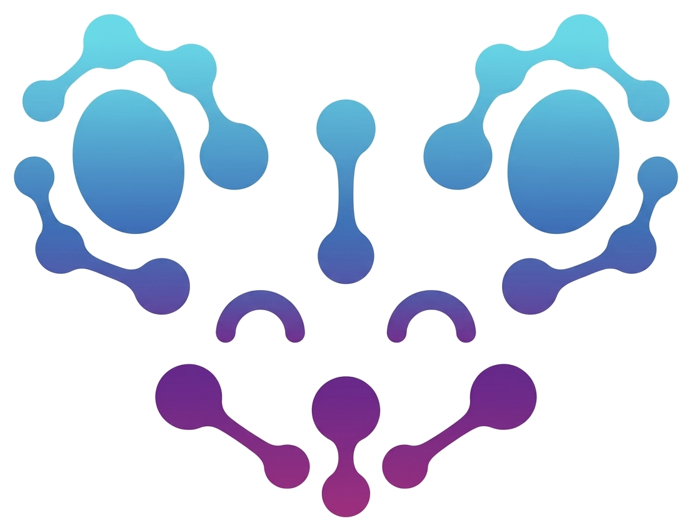

A benchmark for large-scale pretraining and across-animal transfer in multi-region neural recordings from the International Brain Laboratory.
1 University of Pennsylvania, 2 Mila, 3 Université de Montréal, 4 Stanford University, 5 Columbia University, 6 Allen Institute, 7 William James Center for Research, 8 ISPA - Instituto Universitário, 9 University of Geneva, 10 Karolinska Institutet, 11 UCLA, 12 University College London, 13 Champalimaud Foundation, 14 Lingang Laboratory, 15 The Chinese University of Hong Kong, 16 Donders Institute, 17 University of Minnesota, 18 Princeton University, 19 Leiden University, 20 McGill University, 21 IBM
* Equal contribution. † Shared senior authorship.
Advances in large-scale neural recording have made it possible to collect data across many animals and distributed brain regions, raising the question of whether this scale can be exploited to learn general-purpose neural representations transferable across diverse downstream tasks. Yet, progress toward this goal has been limited by fragmented evaluation protocols and a narrow focus on individual task domains. Here, we present BrainWideBench, a benchmark for evaluating across-animal transfer on multi-region neural recordings, built on the International Brain Laboratory Brainwide Map dataset of neural and behavioral recordings spanning 276 brain regions from 139 mice performing a sensory-guided decision-making task. The benchmark is organized around three complementary task suites that evaluate whether learned representations support downstream decoding of behavior, can predict masked or future neural activity, and can recover biologically meaningful anatomical organization. With this benchmark, we systematically evaluate pretraining methods across transfer settings, including finetuning on downstream objectives and zero-shot generalization to unseen animals. Our results confirm pretraining improves performance over matched single-session baselines, but we show current methods exhibit heterogeneity in transfer capabilities: gains depend strongly on the alignment between pretraining objectives and downstream tasks. No single approach performs uniformly well across all three suites, and most methods are designed to only address a subset of them. Together, these findings suggest that learning representations that jointly generalize across behavior, dynamics, and anatomy remains an open challenge. By providing a unified and reproducible evaluation suite, BrainWideBench establishes a framework for measuring progress toward general-purpose models of the mouse brain.
TS1 Behavior. Predict trial-level behavioral outcomes from neural population activity.
TS2 Dynamics. Reconstruct firing rate trajectories and spike predictions across brain regions.
TS3 Anatomy. Classify recorded neurons to their brain region from activity alone.
@inproceedings{ibl_brain_wide_bench_2026,
title = {TODO paper title},
author = {TODO author list, in the paper's order},
booktitle = {TODO proceedings title},
year = {TODO},
url = {TODO openreview or arXiv URL},
}
@misc{ibl_brain_wide_map,
title = {TODO IBL Brain Wide Map dataset citation},
author = {{International Brain Laboratory}},
year = {TODO},
}